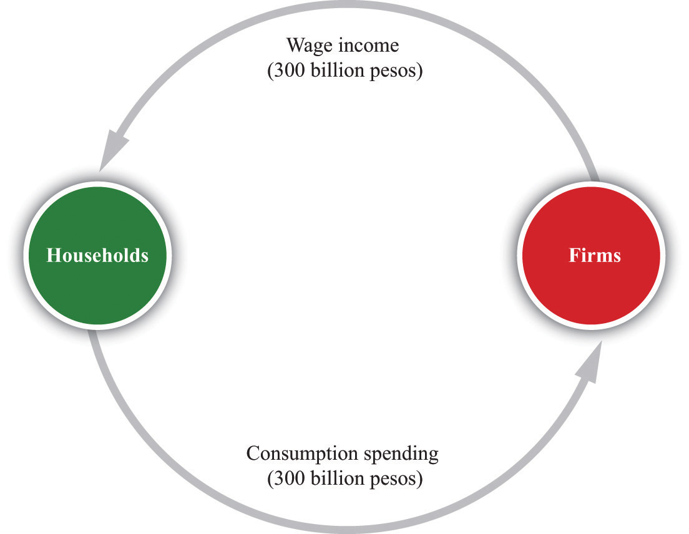
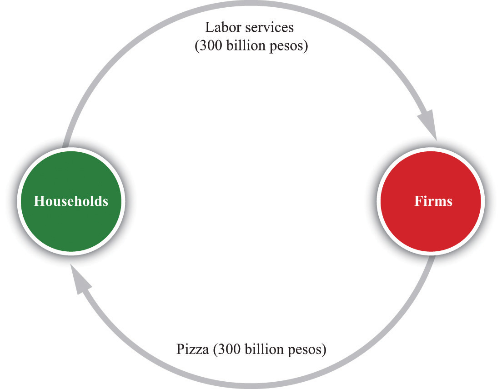
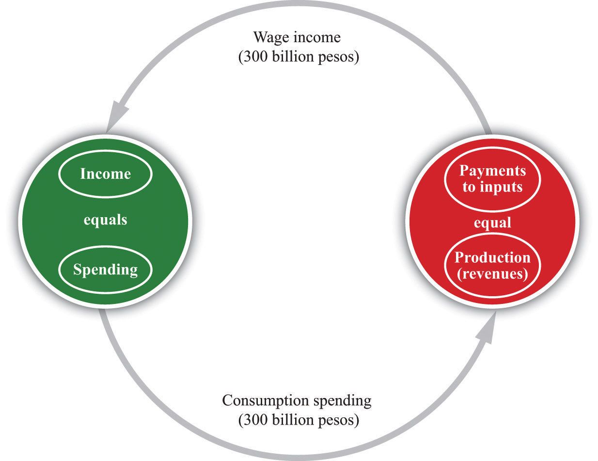
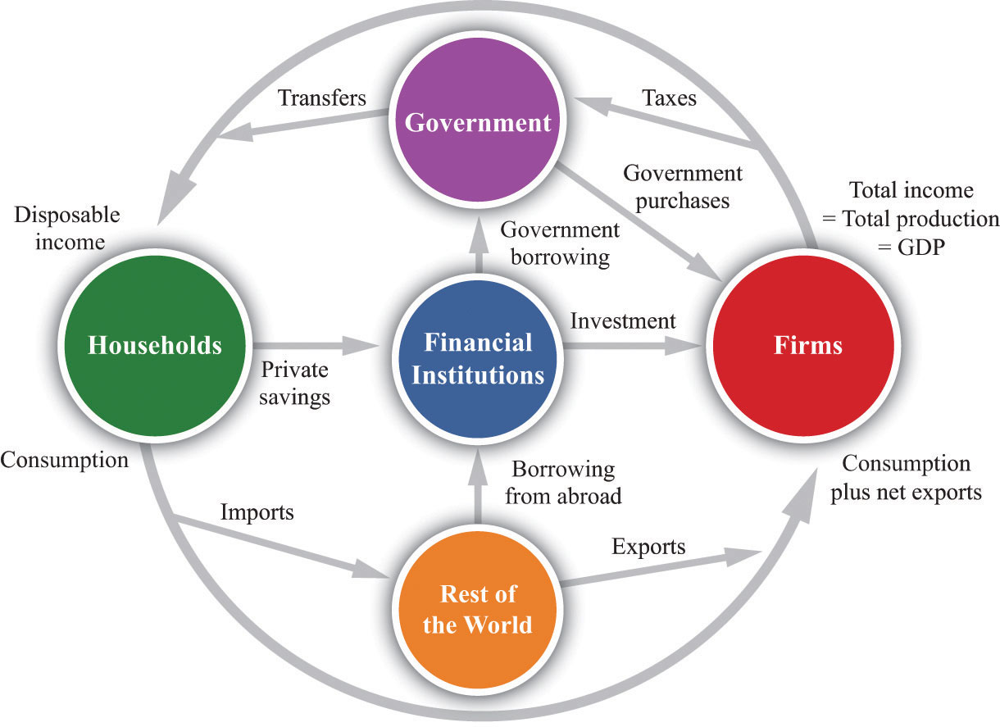

After you have read this section, you should be able to answer the following questions:
Looking at some basic measurements of the economy has allowed you to be more concrete about the problems in Argentina. You report back to the International Monetary Fund (IMF) team that production has been declining in recent years. You also report that there was a recent increase in the price level. As yet, though, you do not know anything about either the causes or the consequences of these events. Measurement of the economy tells you what has happened, but it tells you neither why it happened nor what it means. Measurement is not enough. We need frameworks to help us make sense of the data that we gather.
Economists use many different kinds of frameworks to make sense of an economy. One of the most important is called the circular flow of incomeThe money flows among the different sectors of an economy as individuals and firms buy and sell goods and services.. To understand the circular flow, recall our working definition of economic activity: “goods and services produced for sale.” So far, we have focused on production. Now we think about the “for sale” part.
Toolkit: Section 31.27 "The Circular Flow of Income"
As individuals and firms buy and sell goods and services, money flows among the different sectors of the economy. The circular flow of income describes these flows of dollars. From a simple version of the circular flow, we learn that, as a matter of accounting,
gross domestic product (GDP) = income = production = spending.This relationship lies at the heart of macroeconomic analysis.
There are two sides to every transaction. When you purchase a piece of computer software, you give money to the seller, and the seller gives the software to you. (You might literally hand over dollar bills and receive a CD, or you might enter a credit card number into a website entitling you to a download. The idea is the same either way.) There is a flow of money from you to the seller and a flow of goods or services from the seller to you. This is true for all transactions: as individuals and firms buy and sell goods and services, money flows among the different sectors of the economy. Macroeconomists follow the money. By tracking these flows, we can understand the links between different markets; by understanding these links, we gain insight into the functioning of an economy.
One linkage is between income and spending. The spending by households on goods and services is funded by the income that households earn. But this income comes from firms, and they get their income from the spending of households. Thus there is a circular flow of income in an economy as a whole.
Household income comes from two main sources: (1) Households contain workers who sell their time to firms and receive wages in return. (2) Households are the ultimate owners of the firms—shareholders live in houses too—and thus any profits that firms make are returned to households. All firms in an economy are owned by someone, and any profits they make do not vanish into thin air but must eventually show up as someone’s income.
Households take this income and do one of two things: they either spend it or save it. To start, let us figure out what would happen if no household income is saved. Households spend all their income, and this money becomes the revenue of firms. Firms send these revenues back to households, either as labor income or profits, and so the circular flow continues.
We can make this idea more precise, using the pizza economy to illustrate. Imagine that our economy is composed of two sectors, which we call households and firms. Households supply labor to firms and are paid wages in return. Firms use that labor to produce pizzas and sell those pizzas to households. There is a flow of goods (pizzas) from firms to households and a flow of labor services (worker hours) from households to firms. Because there are two sides to every transaction, there is also a flow of dollars from households to firms, as households purchase pizza, and a flow of dollars from firms to households, as firms pay workers.
For now, think of firms as very simple entities that pay out all the income they receive in the form of wages to workers. As a result, 300 billion pesos flow from the household sector to the firm sector (the purchase of pizzas) each year, while 300 billion pesos flow from the firm sector to the household sector (the payment of wages). These flows of pesos are illustrated in Figure 18.11 "The Simplest Version of the Circular Flow". Think of this diagram as representing the interaction of many households with many firms. A particular household works for one (or perhaps a few firms) but purchases goods and services from many firms. (If you like, imagine that different firms specialize in different kinds of pizza.) A feature of modern economies is that individuals specialize in production of goods and services but generalize in consumption by consuming many varieties of goods and services.
Figure 18.11 The Simplest Version of the Circular Flow
The circular flow of income follows the money in an economy. In the pizza economy, firms produce pizzas and sell them to households, while households sell labor to firms and purchase pizzas from them.
The circular flow reveals that there are several different ways to measure the level of economic activity. From the household perspective, we can look at either the amount of income earned by households or their level of spending. From the firm perspective, we can look at either the level of revenues earned from sales or the amount of their payments to workers and shareholders. In all cases, the level of nominal economic activity would be measured at 300 billion pesos.
Corresponding to the flows of pesos shown in Figure 18.11 "The Simplest Version of the Circular Flow", there are flows of goods and services between these sectors, as shown in Figure 18.12 "The Flows of Goods and Labor within the Circular Flow". The wage income received by consumers is payment for labor services that flow from households to firms. The consumption spending of households is payment for the goods that flow from firms to households.
Figure 18.12 The Flows of Goods and Labor within the Circular Flow
There are flows of goods and labor services that correspond to the flows of pesos shown in Figure 18.11 "The Simplest Version of the Circular Flow". Three hundred billion pesos worth of pizza flows from firms to households, and 300 billion pesos worth of labor services flow from households to firms.
Of course, there are also flows of dollars within the household and firm sectors as well as between them. Importantly, firms purchase lots of goods and services from other firms. One of the beauties of the circular flow construct is that it allows us to describe overall economic activity without having to go into the detail of all the flows among firms.
Figure 18.13 "Income, Spending, Payments to Inputs, and Revenues in the Simple Circular Flow" shows us that the flows in and out of each sector must balance. In the household sector, total spending by the household equals total income for the household. If spending equals income for each individual household, then spending also equals income for the household sector as a whole. Similarly, each firm has a balance sheet. Accounting rules ensure that all of a firm’s revenues must ultimately show up on the other side of the balance sheet as payments for the inputs that the firm uses (in our simple example, the firm’s only input is labor). As this is true for each individual firm, it is also true for the sector as a whole.
Figure 18.13 Income, Spending, Payments to Inputs, and Revenues in the Simple Circular Flow
In each household, and thus in the household sector as a whole, income must equal spending. In each firm, and thus in the firm sector as a whole, revenues must equal payments to inputs. GDP measures the production of the economy and total income in the economy. We can use the terms production, income, spending, and GDP interchangeably.
Although this version of the circular flow is simple, it teaches us four key insights that remain true (albeit in slightly refined forms) in more sophisticated versions as well.
The circular flow of income highlights a critical fact of national income accounting:
GDP = income = spending = production.Earlier, we emphasized that GDP measures the production of an economy. Now we see that GDP is equally a measure of the income of an economy. Again, this reflects the fact that there are two sides to each transaction. We can use the terms income, spending, production, and GDP completely interchangeably.
What does this mean for your assessment of Argentina? For one thing, it tells you that the decline in real GDP implies a corresponding decline in income. Economists pay a great deal of attention to real GDP statistics for exactly this reason: such statistics provide information on the total amount of income earned in an economy.
Figure 18.14 "The Complete Circular Flow" shows a more complete version of the circular flow. It includes five sectors: the household and firm sectors that we have seen already, a government sector, a financial sector, and a foreign sector. In every sector of the circular flow, accounting rules tell us that the flow of money in must equal the flow of money out. When we look at this sector by sector, we discover five accounting relationships, each playing an important role in macroeconomics. For now, we take a very quick look at each one in turn.When we revisit each sector in different chapters of this book, we include more precise definitions and more detailed discussion of the individual flows (such as consumption or government purchases).
Figure 18.14 The Complete Circular Flow
The circular flow of income describes the flows of money among the different sectors of an economy. This representation includes the five main sectors: households, firms, government, the financial sector, and the rest of the world.
The flows in and out of the firm sector of an economy must balance. The total flow of dollars from the firm sector measures the total value of production in the economy. The total flow of dollars into the firm sector equals total expenditures on GDP, which we divide up into four categories.
Toolkit: Section 31.27 "The Circular Flow of Income"
The national income identityThe condition that production is the sum of consumption, investment, government purchases, and net exports. is the condition that
production = consumption + investment + government purchases + net exports.It is the most fundamental relationship in the national accounts.
Consumption refers to total expenditures by households on final goods and services. Investment refers to the purchase of goods and services that, in one way or another, help to produce more output in the future. Government purchases are all the purchases of goods and services by the government. Net exports are the difference between exports and imports: they measures the total expenditure flows associated with the rest of the world.These terms are explained in detail in Chapter 22 "The Great Depression".
Households receive income from firms. They also receive money from the government (transfers) and must pay money to the government (taxes). Households spend some of their disposable income and save the rest. In other words,
income + transfers − taxes = consumption + private savings.There are many different ways of saving, but we do not focus on these differences. We simply imagine that households take their savings to financial markets to purchase interest-bearing assets. Some individual households are net borrowers, but, overall, the household sector saves. There is, on net, a flow of dollars from the household sector to the financial sector of an economy. These dollars are then available for firms to borrow to build new factories, install up-to-date equipment, and so on. That is, they are available for investment.The flows in and out of the household sector are discussed in Chapter 27 "Income Taxes".
From a macroeconomic perspective, the key functions of government are as follows:
The amount that the government collects in taxes does not need to equal the amount that it pays out for government purchases and transfers. If the government spends more than it gathers in taxes, then it must borrow from the financial markets to make up the shortfall.
Figure 18.14 "The Complete Circular Flow" shows two flows into the government sector and one flow out. Since the flows in and out of the government sector must balance, we know that
government purchases = tax revenues − transfers + government borrowing.Government borrowing is commonly referred to as the budget deficit. It is also possible that the government takes in more than it spends, in which case the government is saving rather than borrowing, so there is a budget surplus rather than a deficit.Government finances are discussed in Chapter 29 "Balancing the Budget".
The financial sector of an economy is at the heart of the circular flow. It summarizes the behavior of banks and other financial institutions. Most importantly, this sector of the circular flow shows us that the savings of households provide the source of investment funds for firms. On the left-hand side, the figure shows a flow of dollars from the household sector into financial markets, representing the saving of households. (Though we have not included it in Figure 18.14 "The Complete Circular Flow", firms also save, by means of profits that they retain to finance new investment rather than distribute to their shareholders. As far as the national accounts are concerned, it is as if firms sent these funds to the financial market and then borrowed them back again.) When we borrow from other countries, there is a second flow of dollars into the financial markets. On the right-hand side, there is a flow of money from the financial sector into the firm sector, representing the funds that are available to firms for investment purposes. The linkage between the saving of households and the investment of firms is one of the most important ideas in macroeconomics.
The financial sector is also linked to the government sector and the foreign sector. These flows can go in either direction. As we have already seen, if the government runs a deficit, it does so by borrowing from the financial markets. There is a flow from the financial sector to the government sector. This is the case we have drawn in Figure 18.14 "The Complete Circular Flow". If the government were to run a surplus, the flow would go in the other direction: government would provide an additional source of saving. The foreign sector can provide an additional source of funds for investment, if those in other countries decide they want to use some of their savings to purchase assets in our economy. In this case, there is a flow from the foreign sector into the financial sector. Again, this is the case we have drawn. If we lend to other countries, then the flow goes in the other direction.
The flows in and out of the financial sector must balance, so
investment + government borrowing = private savings + borrowing from other countries.The foreign sector is perhaps the hardest part of the circular flow to understand because we have to know how international transactions are carried out.
Some of the goods produced in an economy are not consumed by domestic households or firms in an economy but are instead exported to other countries. Whenever one country sells something to another country, it acquires an asset from that country in exchange. For example, suppose a US movie company sells DVDs to an Australian distributor. The simplest way to imagine this is to suppose that the distributor hands over Australian dollar bills to the movie company.. The movie company—and, more generally, the US economy—has now acquired a foreign asset—Australian dollars.
Because these Australian dollars can be used to purchase Australian goods and services at some time in the future, the US economy has acquired a claim on Australia. In effect, the United States has made a loan to Australia. It has sent goods to Australia in exchange for the promise that it can claim Australian products at some future date.
Similarly, some of the goods consumed in our economy are not produced locally. For example, suppose that a US restaurant chain purchases Argentine beef. These are imports. We could imagine that the restaurant chain hands over US dollars to the Argentine farmers. In this case, the United States has borrowed from Argentina. It has received goods from Argentina but has promised that it will give some goods or services to Argentina in the future.
Of course, international transactions in practice are more complicated than these simple examples. Yet the insight we have just uncovered remains true no matter how intricate the underlying financial transactions are. Exports are equivalent to a loan to the rest of the world. Imports are equivalent to borrowing from the rest of the world.
If we import more than we export, then we are borrowing from the rest of the world. We can see this by looking at the flows in and out of the foreign sector:
borrowing from abroad = imports − exports.If we export more than we import, then—on net—we are lending to the rest of the world, and there is a flow of dollars from the financial markets to the rest of the world.
We saw that, in Argentina, real GDP decreased between 1998 and 2002. The circular flow of income tells us that when real GDP decreases, it must also be the case that real production decreases and real spending decreases. The IMF team in 2002 wanted to understand why real GDP decreased. We are not going to answer that question in this chapter—after all, we are still at the very beginning of your study of macroeconomics. Still, the circular flow still teaches us something very important. If real GDP decreased, then there are really only two possibilities:
Of course, it could be the case that both of these are true. This insight from the circular flow is a starting point for explaining what happened in Argentina and what happens in other countries when output decreases.